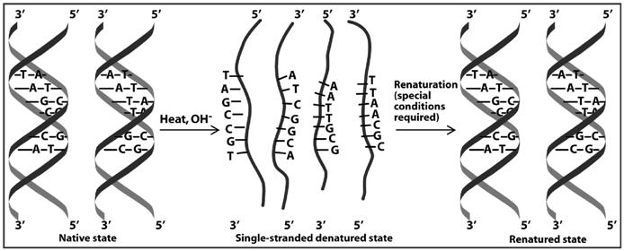

El interés sobre el plegamiento de las macromoléculas se despertó al estudiar sus reacciones
de desnaturalización. Si tenemos proteínas o ácidos nucleicos en disolución y cambiamos de
forma notable las condiciones en que suelen encontrarse en su medio biológico, pierden su
estructura y función nativas. Este proceso, llamado reacción de desnaturalización, puede ser
reversible en ciertas condiciones y los cambios pueden ser por ejemplo de temperatura, por
encima de su temperatura de fusión ( ), o en la naturaleza del solvente.
), o en la naturaleza del solvente.
Anfinsen et al. (1961) mostró experimentalmente que la desnaturalización es reversible al menos para
proteínas pequeñas, añadiendo y retirando agentes desnaturalizantes a disoluciones de enzimas
que ganaban y perdían su actividad. Así demostró que el plegamiento de una proteína depende
exclusivamente de su secuencia, aunque hoy sabemos que algunas necesitan la ayuda de
chaperoninas (Hartl & Hayer-Hartl, 2002).
Todavía hoy el proceso de plegamiento no se comprende bien debido a su complejidad (ver secciones 2.3 y 2.4), aunque llevemos 50 años estudiándolo (Dill & MacCallum, 2012).
|

|
La  de los ácidos nucleicos es proporcional al contenido en bases GC de su secuencia,
ya que estos pares de bases (ver figura 1.17) establecen entre sí 3 puentes de hidrógeno,
mientras que los AT/AU sólo 2. Si la temperatura supera
de los ácidos nucleicos es proporcional al contenido en bases GC de su secuencia,
ya que estos pares de bases (ver figura 1.17) establecen entre sí 3 puentes de hidrógeno,
mientras que los AT/AU sólo 2. Si la temperatura supera  , las moléculas de ADN se separan
en dos hebras polinucleotídicas (como se muestra en la figura 2.1), pero si la
bajamos lentamente ambas hebras vuelven a unirse de forma complementaria en una reacción llamada
hibridación. De nuevo vemos cómo en este caso la secuencia es suficiente para guiar el plegamiento,
al menos para moléculas pequeñas.
, las moléculas de ADN se separan
en dos hebras polinucleotídicas (como se muestra en la figura 2.1), pero si la
bajamos lentamente ambas hebras vuelven a unirse de forma complementaria en una reacción llamada
hibridación. De nuevo vemos cómo en este caso la secuencia es suficiente para guiar el plegamiento,
al menos para moléculas pequeñas.